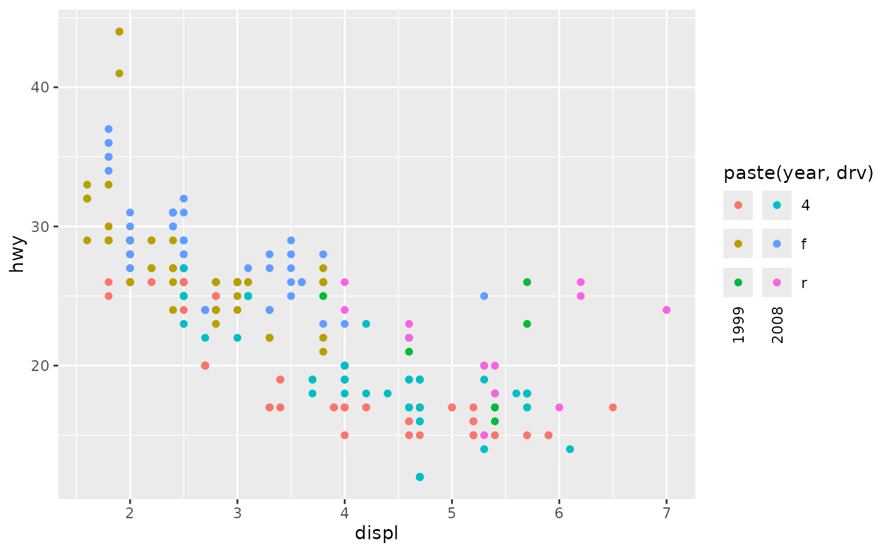

Cross table legend guide
guide_legend_cross.RdLike regular legends, this guide shows keys mapped onto values. It is useful for displaying the interaction of two variables more intuitively than a linear legend.
Usage
guide_legend_cross(
sep = "[^[:alnum:]]+",
label_order = c("row", "column"),
h_label.theme = element_text(),
h_label.position = "right",
v_label.theme = element_text(angle = 90, vjust = 0.5),
v_label.position = "bottom",
reverse = FALSE,
...
)Arguments
- sep
A
character(1)orNULL. When:- A
character(1) Acts as a 'regex' pattern to split a single set of labels into two parts. Defaults to any non-alphanumeric pattern. Note that special regex characters need to be escaped, so splitting on a period would have to be
"\\.".NULLDisables string splitting, which should only be used when combining two scales that don't share labels in a single legend. See examples below.
- A
- label_order
A
character(2)giving the order of dimensions to which the first and second label should map to. Can either bec("row", "column")orc("column", "row").- h_label.theme, v_label.theme
An
<element_text>(default) or<element_blank>object controlling the appearance of horizontal (left/right) or vertical (top/bottom) labels respectively. These inherit from thelegend.textsetting in the plot's theme.- h_label.position, v_label.position
A
character(1)indicating the position of a label.h_label.positioncan be one of"left"or"right"(default), whereasv_label.positioncan be one of"top"or"bottom"(default).- reverse
A
logical(2)orlogical(1)that internally gets recycled to length 2. Ifreverse[1]isTRUE, reverses the order of the first label. Ifreverse[2]isTRUE, reverses the order of the second label. Defaults toc(FALSE, FALSE).- ...
Arguments passed on to
ggplot2::guide_legendtitleA character string or expression indicating a title of guide. If
NULL, the title is not shown. By default (waiver()), the name of the scale object or the name specified inlabs()is used for the title.title.positionA character string indicating the position of a title. One of "top" (default for a vertical guide), "bottom", "left" (default for a horizontal guide), or "right."
title.themeA theme object for rendering the title text. Usually the object of
element_text()is expected. By default, the theme is specified bylegend.titleintheme()or theme.title.hjustA number specifying horizontal justification of the title text.
title.vjustA number specifying vertical justification of the title text.
keywidthA numeric or a
grid::unit()object specifying the width of the legend key. Default value islegend.key.widthorlegend.key.sizeintheme().keyheightA numeric or a
grid::unit()object specifying the height of the legend key. Default value islegend.key.heightorlegend.key.sizeintheme().directionA character string indicating the direction of the guide. One of "horizontal" or "vertical."
default.unitA character string indicating
grid::unit()forkeywidthandkeyheight.override.aesA list specifying aesthetic parameters of legend key. See details and examples.
orderpositive integer less than 99 that specifies the order of this guide among multiple guides. This controls the order in which multiple guides are displayed, not the contents of the guide itself. If 0 (default), the order is determined by a secret algorithm.
Value
A <Guide> ggproto object that can be given to the
guides() function, or set as the guide argument
in a non-position scale.
Details
This guide finds an interaction of two variables by trying to split a compound label. Unfortunately, this might require some work to format splittable labels. Moreover, if one intends to use this guide to show an interaction between, for example: shapes and colours, both the shape and colour scales should return compound labels.
See also
Other legend variants:
guide_legend_string()
Examples
# Display interaction by mapping a compound variable
ggplot(mpg, aes(displ, hwy)) +
geom_point(aes(colour = paste(cyl, year))) +
guides(colour = "legend_cross")

# To make a cross legend for two scales, the plot must satisfy 2 criteria:
# 1. Both scales need the same name/title.
# 2. The guide needs `sep = NULL` to disable label splitting.
# The easiest way to do this is to make one guide and feed it to both scales.
guide <- guide_legend_cross(sep = NULL, title = "My Title")
ggplot(mtcars, aes(mpg, disp)) +
geom_point(aes(colour = factor(cyl), shape = factor(vs))) +
guides(colour = guide, shape = guide)